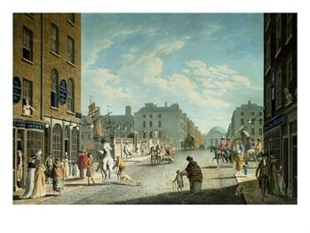
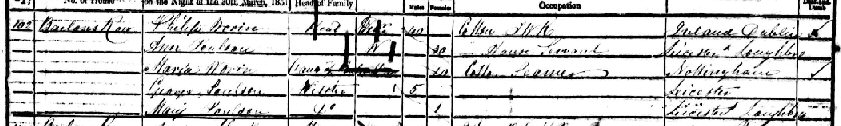

Our Warren branch in Ireland has been traced back to Dublin at the beginning of the 19th century. Phillip Warren was born in Dublin between 1801 and 1805, son of Thomas Warren, a Framework Knitter. As yet we are unsure whether the Warren family were settled here or just passing through, however the family were Catholic and so this points to Irish origins. He married Deborah Jelley in about 1826, however the marriage has yet to be traced. Jelley is a rare name in Ireland and is generally confined to the North.
Phillip and Deborah had two children before leaving Ireland. Thomas was born in 1828 and Peter in 1830. By 1831 the family had settled in Nottingham in England and Deborah had given birth to their first daughter, Mary Ann. Mary Ann was baptised in the Catholic Church of St John the Evangelist in Oct 1831. The family had five children in total being joined by James in 1836 and Maria in 1840.
Sadly, Deborah died of pneumonia in 1844 leaving Phillip to look after the children. Phillip is described as a Framework Knitter, like his father, and it may be possible that he was involved in the textile trade before leaving Ireland. In fact there had been a severe slump in the Irish linen industry in the late 1830's and it could have been this that drove the family to leave for England. Phillip married quickly again after Deborah's death. In March 1845 he married Bridgett Collins, a widow and daughter of a tailor. It is not certain what became of Bridgett and by 1851 Phillip has met and is living with another partner Ann Poulson (nee Pratt) and has moved to Loughborough, a local framework knitting centre.

Phillip appears to marry Ann Poulson and the family are living together in Nottingham shortly before Phillip's death from Brights Disease in 1863.
Phillip and Deborah's daughter Mary Ann does not appear to be living with her father in 1851 and has not been traced in the 1861 Census either. She reappears again with her marriage to Thomas Peck in Sneinton in April 1871. They have 6 children between 1867 and 1878 although it is not entirely clear whether Thomas is the father of the oldest two children. Eliza Peck is the first child born after their marriage in September 1871.
Current Research : Research required into the origins of the family in Ireland.